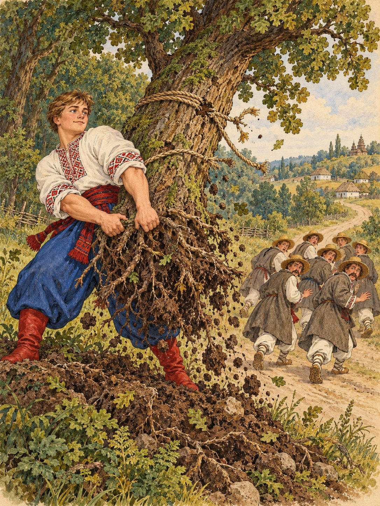

Ішли вони додому, і по дорозі старші брати почали шепотітися між собою:
— Як ми покажемося людям? Нас шестеро, а врятував нас найменший. Соромно буде.
Задумали вони недобре і, коли Котигорошко ліг під дубом відпочити, прив’язали його до дерева, а самі пішли далі.
Та прокинувся Котигорошко, потягнувся і вирвав дуба з корінням. Наздогнав він братів і сказав:
— Негоже так робити, браття. Але я вас прощаю.
